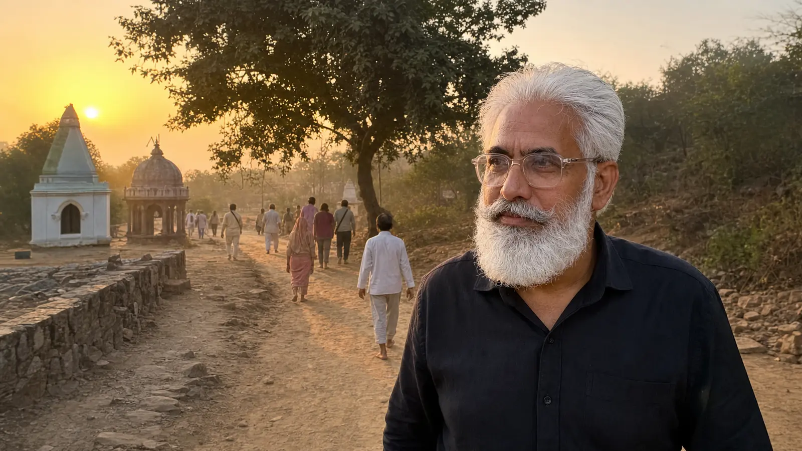

Gentlest routes: Mathura + Vrindavan day tour; Mehandipur Balaji single-temple day
Best car: Innova Crysta — easier boarding, softer ride
Golden rule: fewer stops, more time at each
Long circuits: take the 2-day version instead of one packed day
Extra breaks: free — just tell us on WhatsApp
A large share of our pilgrimage bookings are families travelling with parents and grandparents — and the trips that go best are the ones planned around the elders, not around a checklist. This guide collects what we've learned from running those trips: which routes are genuinely comfortable, where the walking and stairs hide, and the small decisions that make a big difference.
Padma Shree Travels runs this route with fixed-fare AC cabs and verified local drivers. WhatsApp +91 87200 81102 for today's fare.
Four things, in order of importance: a car that's easy to get in and out of; a day plan with slack in it (fewer stops, more time at each); a driver who drops at the closest permitted point and waits without rushing anyone; and honest information beforehand about where walking and stairs are unavoidable. Everything else — the route, the timings, the breaks — follows from these.
| Route | Comfort level | What to know |
|---|---|---|
| Mathura + Vrindavan (₹3,000) | Gentlest | Moderate distances; some lane walking in old Vrindavan; easy to shorten |
| Mehandipur Balaji | Comfortable | 2.5–3 hrs each way; driver waits at parking; unhurried darshan |
| Kaila Devi | Moderate | Longer drive (3.5–4 hrs each way); walking stretch from parking to temple |
| Kaila Devi + Balaji combo | Demanding as one day | 12–13 hrs — take the 2-day version with a night halt instead |
The Rajasthan temples reward early departures — Balaji at 5:30–6:00 AM, Kaila Devi at 5:00 AM, and the two-temple combo at 4:30–5:00 AM. Early starts actually suit many elders (cooler hours, lighter crowds at the temple), but the trade-off is the long day that follows. If a pre-dawn start plus a late return sounds like too much, that's precisely what the 2-day versions are for — we say this honestly rather than overpromising comfort.
For any route beyond about 2 hours each way, the Innova Crysta earns its keep: higher seats that make boarding easier than a low sedan, a softer ride on highway stretches, and room to rest between temples. For short hops — Mathura, or a local Agra darshan day — a sedan is perfectly fine.
Tea and washroom breaks are planned around your group, not the clock — and extra stops cost nothing; just tell us when booking. Luggage stays locked in the car at every temple, with the driver staying with the vehicle. Waiting is included within the booked day, so nobody hurries darshan. And at every temple, the driver drops you at the closest point the rules allow — though be prepared that some walking is simply part of certain temples: Kaila Devi's stretch from parking, the hilltop stairs at Barsana and Nandgaon, and Vrindavan's lanes.
We don't provide wheelchairs or medical support, and no cab service can remove the walking that some temples involve. What we can do is tell you exactly what each route demands before you book, so you choose with open eyes.
What time will we actually be back? What walking does each temple involve? Is waiting at temples included, or charged? Which car do you recommend for our group, and why? Is there a 2-day version, and what does it cost? We answer all five in writing on WhatsApp before you confirm — and if a route doesn't suit your group, we'll say so and suggest an alternative from our temple tours hub.
The Mathura + Vrindavan full day (₹3,000) is generally the gentlest — moderate distances, familiar food, and the flexibility to shorten the day. Mehandipur Balaji is a comfortable single-temple day too, with the driver waiting at the parking throughout.
Its higher seats make getting in and out noticeably easier than a low sedan, the ride is softer on longer highway stretches, and there's more room to stretch out and rest between stops. For any route beyond 2 hours each way, it's usually worth the difference.
It varies by temple. Drivers drop you at the closest permitted point everywhere, but some walking is unavoidable: Kaila Devi has a stretch from parking to the temple, Barsana and Nandgaon temples sit on hilltops with stairs, and Vrindavan's old-town temples involve lane walking. We tell you honestly what each route involves before you book.
Yes, and it costs nothing extra. Tell us on WhatsApp if anyone in your group needs more frequent tea or washroom stops, and the driver plans the day around your comfort rather than the clock.
Usually not as a single day — it runs 12–13 hours with about 7 hours of driving. For groups with elderly members we honestly recommend the 2-day version with a night halt in Karauli, which turns the same yatra into a genuinely restful trip.
Tell us your group and your temples — we'll recommend the route, the car, and the pace honestly.